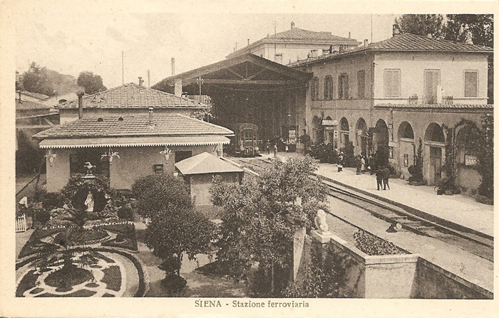

LE LITI DI LORENZO FRANCI CON LE GUARDIE MUNICIPALI

Siena 29 Agosto 1891
Circa le ore 7 pomeridiane essendo comandato il Servizio alla Ferrovia, per l'ordine delle vetture pubbliche al Suonare della trombetta che annunzia l'arrivo del treno proveniente da Chiusi, invitai tutti i vetturini a mettersi ai posti loro assegnati ma in mezzo ai detti vetturini essendovene vari che non erano di turno, ordinai a questi d'uscire di sotto la tettoia e mettersi in modo da non impedire il passo delle persone; certo Franci Lorenzo che era vicino a Braconi Fortunato incominciarono addire non è giusto che per colpa di due o tre mascalzoni venuti ora ci vogliono imporre le Leggi ma prima devono imparare il servizio, e rivoltosi a me disse vai a zappare se vuoi mangiare, mascalzone; io lavoro; le risposi che quelle parole le dasse ai suoi fratelli; egli soggiunse mi fai poca paura, credono questi farabutti farmi paura ma in queste tasche ci sono dei fogli da mille e vado fuori a mio comodo; dopo aperto il cancello il Franci Lorenzo si mise al di fuori della tettoia ad al mio passare pure una volta si fece ad offendermi dicendo che altri avevan messo il giudizio; Le risposi che io non devo dare confidenze a Lui e che quanto prima ricorrerò dai miei Signori Superiori, perchè volevo che assennasse i regolamenti, Municipali
Testimone presente la Guardia di Pubblica Sicurezza
Bevilacqua Edoardo e
Petrini Giuseppe

La stazione di Siena a fine Ottocento

31 marzo 1909
Le si partecipa che a datare da domenica 1° Aprile e per la durata di giorni quattro la vettura pubblica N°3 di sua proprietà è sospesa dal pubblico servizio e cioè in seguito alla grave mancanza commessa ieri sera circa le ore 21 del conducente la vettura stessa il quale oltre a non dare ascolto alla ingiunzione fattagli da un agente di non spingere il cavallo al trotto nei punti ove cioè è espressamnte proibito all'atto della contestazione della contravvenzione rispondeva in modo scorretto all'indirizzo della guardia municipale.
Ben s'intende che la sospensione non vale a tacitare la contravvenzione contestata che ove non sia conciliata sarà inviata all'autorità giudiziaria per l'opportuno provvedimento
Il Sindaco
Archivio Comunale di Siena - Postunitario X A cat.I busta 7
|
|